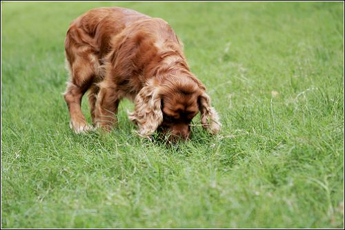

散步犹如历险 @ Sep 09, 2009
每每乘着10点后的夜色，才放心带LUKE出来散步。LUKE总是在开门的刹那迫不及待冲下去，等我。今天在我还没在楼下站稳脚跟，就听见不远处的一阵狗叫与乱战声。一只健壮又陌生的黑色拉布拉多。。。LUKE被JACK的爸爸牵着拎到我面前。
好些人家不喜欢养母犬，不喜欢母犬生理周期时的气味和污染。其实养公犬也未必容易，比如外出散步总带有侥幸心理，即使避开遛狗高峰也没准儿遇到今晚这样的意外情况。如果正好这只爱犬又是输狗不输志气的主儿，不是被个头大的欺负，就是赔钱带人家被咬伤的小狗看病。公犬散步最热衷于在路过之处画地图，以及用自己的气味盖住别的公犬画过的地图，乐此不疲。
以前鄙视父亲带着打狗棍带小小散步，如今家有公犬，才了解一根棍子的威慑力有多强大。


3 Responses to “散步犹如历险”
2009-09-09
你说坚持清早带狗狗遛达的呢，莫非有时差？喜欢那些花花，朦胧中也知道营养状况良好。
2009-09-09
你说他们画地图，我说他们读小报，或者发贴，读读前人留下的，自己再跟上一贴。哈哈。
2009-09-09
you can keep Luke on lead first and release him when you are sure there is not any other dogs. Agree?
Leave A Reply
存档只读，评论已关闭。